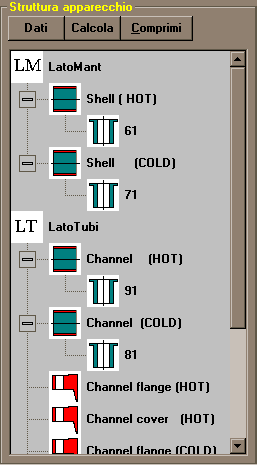
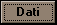
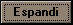

Il pannello della struttura
Il pannello della struttura rappresenta simbolicamente la composizione dell'apparecchio, fatto di membrature, con eventuali aperture, appartenenti ad uno dei due lati, o al lato intermedio.

Il pulsante 
fa apparire la maschera dei dati relativa alla membratura o all'apertura selezionata nel pannello della struttura. Per selezionare una membratura bisogna cliccare sull'icona corrispondente: il nome della membratura appare colorato di colore blu.
Il pulsante lancia il calcolo della membratura selezionata, e fa doppio impiego con il menu 'Calcoli/Calcola membratura'.
Il pulsante 
influisce solo sulla visualizzazione dell'albero della struttura, consentendo di rendere visibili tutti gli elementi di ogni livello
Azioni del mouse sull'albero della struttura
Il nome della membratura può essere cambiato, oltre che nella maschera dei dati di ogni membratura, anche cliccando sul nome a destra dell'icona.
Alcune membrature possono essere spostate da un lato ad un altro trascinandole con il pulsante destro del mouse